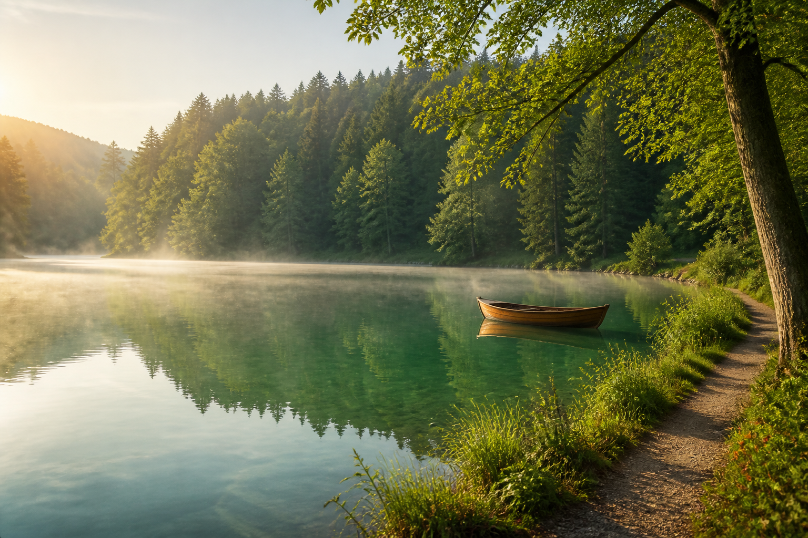

Lacul Ursu
Simbolul stațiunii Sovata, perfect pentru o plimbare de dimineață și o pauză lângă apă.

O dimineață pe lac.
O zi pe potecă.
Împrejurimi
De la lacurile sărate ale Sovatei la potecile din pădurile Transilvaniei, vara se trăiește aici încet, în aer curat.
Simbolul stațiunii Sovata, perfect pentru o plimbare de dimineață și o pauză lângă apă.
O oprire liniștită în peisajul verde al stațiunii.
Un loc potrivit pentru a continua ziua în natură, departe de grabă.
Un reper al zonei, ușor de inclus într-o plimbare prin Sovata.
Porniri pentru drumeții în ritmul tău, pe trasee care leagă pădurea, satele și priveliștile Transilvaniei.